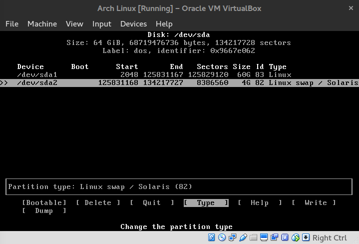
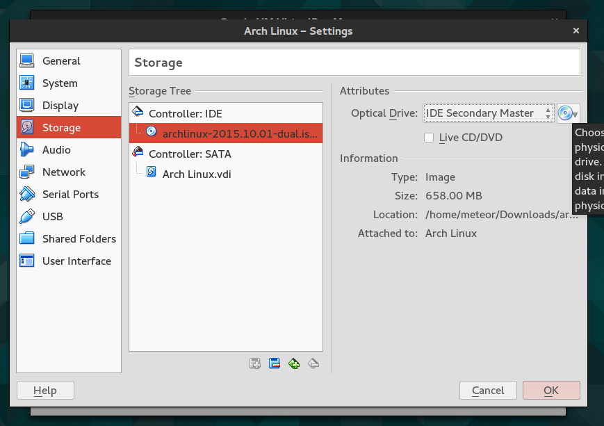
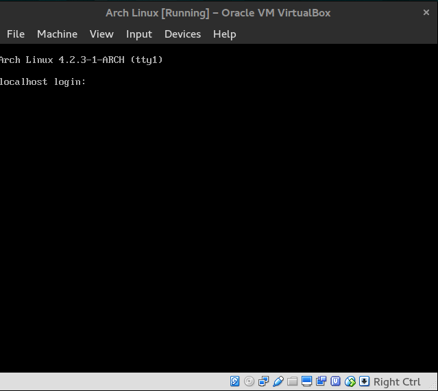

Linux Installation
Created by NTUgEEkChoose Distro
- Ubuntu
- Mint
- Arch
Arch Linux
- 輕量
- 簡潔
- 漸進式升級
- 活躍的社群
Some Preparation
Virtual Box
Arch Linux ISO
Virtualbox Settings
- Add new virtual machine
- Choose Linux/Arch Linux
- Set appropriate RAM, Disk size...
- Launch with Arch Linux ISO
Network checking
$ ping google.com -c 3
PING google.com (64.233.187.102) 56(84) bytes of data
64 bytes from ...
64 bytes from ...
Partition Disk
$ lsblk
NAME MAJ:MIN RM SIZE RO TYPE MOUNTPOINT
sda 8:0 0 64G 0 disk
...
$ cfdisk /dev/sda
# Select dos
Disk Partition
 Remember to [Write] the partition!
Make FS
$ mkfs.ext4 /dev/sda1
$ mkswap /dev/sda2
$ swapon /dev/sda2
$ mount /dev/sda1 /mnt
Pacman Settings
$ vim /etc/pacman.d/mirrorlist
# or try
$ nano /etc/pacman.d/mirrorlist
Search for Taiwan's server, and put it on the top.
For Vim, type /Taiwan to search,
n to find next.
dd to cut.
gg to go to the begining.
j to move down.
p to paste.
:w to save file.
Start Installing!
$ pacstrap /mnt base base-devel gvim git
$ genfstab -U -p /mnt >> /mnt/etc/fstab
Chroot
$ arch-chroot /mnt /bin/bash
# From now on [...] means you may have to tweak it!
$ echo [your hostname] > /etc/hostname
$ passwd
# Set a password. It is recommend not to use your
# usual password, since you will set user password
# later!
$ systemctl enable dhcpcd
# For network after reboot.
Grub install
$ pacman -S grub
...
Packages (1) grub-1:2.02.beta2-5
...
$ grub-install /dev/sda --recheck
Installing for i386-pc platform.
Installation finished. No error reported.
$ grub-mkconfig -o /boot/grub/grub.cfg
$ exit
$ poweroff
Nearly Done!
Remove the ISO.
Congrads!
Date Settings
$ timedatectl set-timezone Asia/Taipei
$ date
Sat Oct 17 23:51:41 CST 2015
Locale Settings
$ vim /etc/locale.gen
# Uncomment en_US.UTF-8 zh_TW.UTF-8
$ locale-gen
Generating locales...
en_US.UTF-8... done
zh_TW.UTF-8... done
Generation complete.
Be carefull of Underscore _
and dash -
In vim, / to search,
0 to go to the begining of line,
x to delete a character.
Locale Settings
$ vim /etc/locale.conf
# add LANG=en_US.UTF-8
$ export LANG=en_US.UTF-8
$ locale
LANG=en_US.UTF-8
In vim, i to enter insert mode,
esc to exit insert mode.
User Settings
$ useradd -m -g users -G wheel -s /bin/bash [your user name]
$ passwd [your user name]
$ visudo
# Uncomment %wheel ALL=(ALL) ALL
VirtualBox Settings
$ pacman -S virtualbox-guest-utils
$ modprobe -a vboxguest vboxsf vboxvideo
$ vim /etc/modules-load.d/virtualbox.conf
# Add the following 3 lines
# vboxguest
# vboxsf
# vboxvideo
Desktop Settings
We recommend Gnome.
Of course, feel free to try other cool desktop (Ex: KDE..).
Gnome install
$ pacman -S gnome
$ systemctl enable gdm
Yes, that simple.